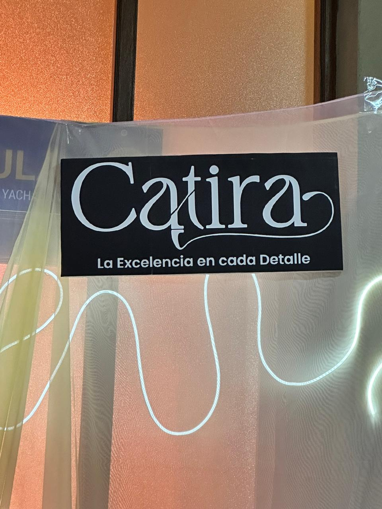
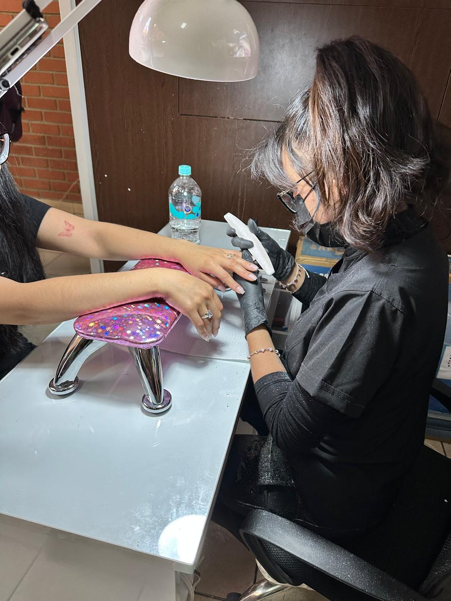
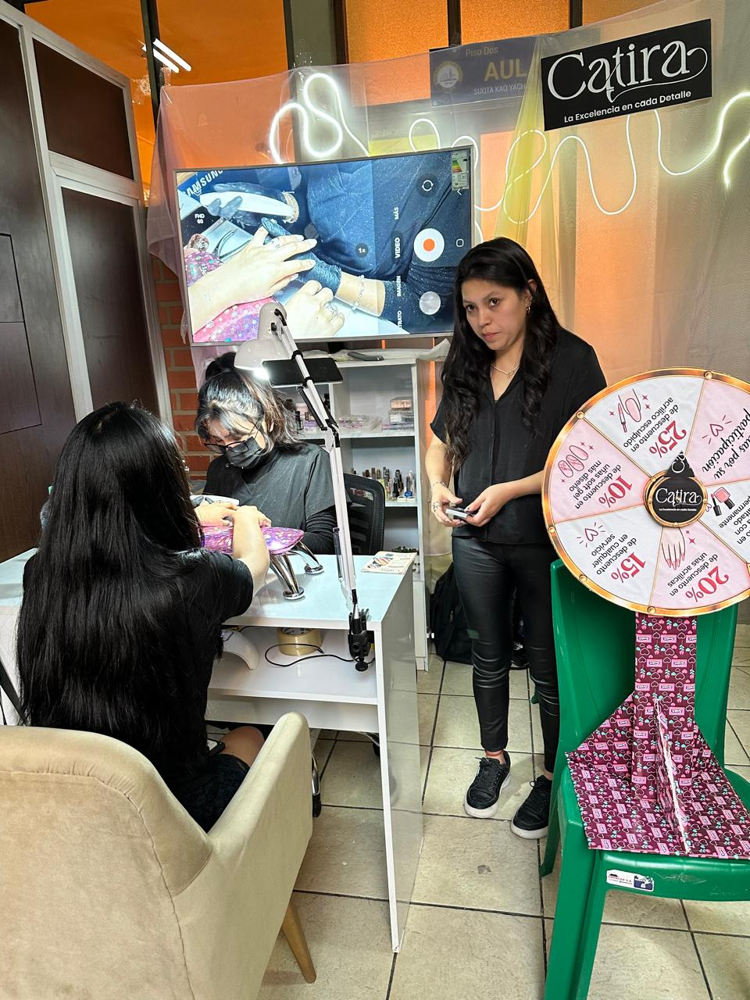

📍 Ubicación y Contacto
• Dirección: Calle Miguel Ángel Valda #100, Sucre, Bolivia (Nota: También registran atención programada en la Calle Chuquisaca #1112, entre 1ro de Octubre y Almagro, cerca de la Plaza España / Zona San Juan).
• Teléfono de Reservas: +591 68665577.
💅 Servicios Disponibles
• Sistemas de extensión: Acrílico esculpido, tips con acrílico, soft gel y polygel.
• Cuidado de la uña natural: Kapping (para proteger y dar resistencia) y manicura/pedicura combinada.
• Acabado y diseño: Pintado semipermanente y diseños personalizados de tendencia.